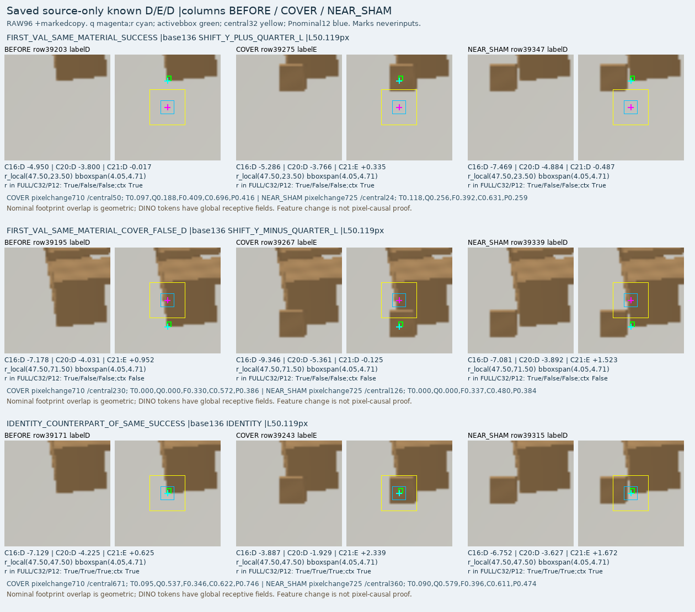
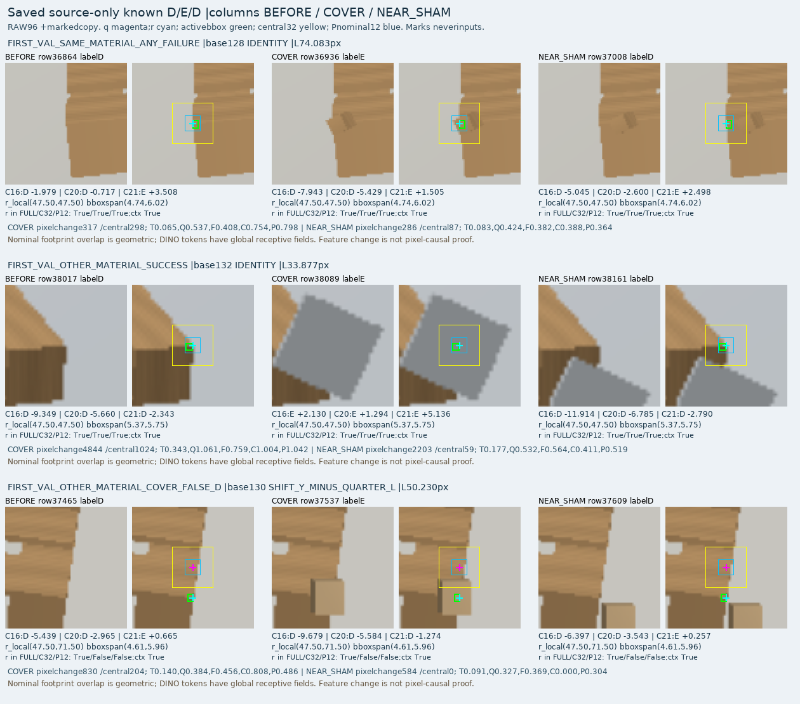

C20 공개 실사만 / C21 같은 공개 실사 + 새 등록 합성, 각 1000 update. 두 후보 모두 사전 source 기준 미달입니다. 현재 실사는 새로 평가하지 않았고 최신 C16 실사 결과 보임1137/1147·외부가림35/90은 그대로입니다. 목표는 미해결이며 계속 active입니다.
192개 합성 설정·768개 장면에서 55,296 query 입력, 공개 실사6원본·5촬영묶음에서 918입력을 실제 생성했습니다. C16/v61 추론과두학습을 완료했습니다. 반복query는독립이미지수와다르며공개라벨은합성물로덮은구조cue의weak AUX입니다.

행정답D/E,열예측D/E/U. 아래전체혼동행렬은source validation입니다. U도recall분모에포함하며S와teacherU는외부가림정답으로합치지않습니다.

상세 precision/recall·보류율·source 기준 · C16/v61 고정 비교와 픽셀 존재 목표 차이 · 실행 증거와 해석 한계
열순서 보임원본/가림/가까운비가림대조. 각열 rawRGB와표시용마크사본을분리했습니다. 보라q·하늘색reference·초록support·노랑central32표시는모델입력이아닙니다. 첫시트는동일재질가림,둘째는다른가림체도포함합니다.


기준점이정확한identity에서도실패가있습니다. 오차조건에서는기준cue가central32/context밖에있을수있지만,그것만으로ViT정보부재나모든실패의원인을확정하지않습니다.
TRAIN loss는마지막에도감소중이고nativeD는각입력당평균1.9회만추출됐습니다. 다만seen/unseenD성능이비슷해미노출만이원인은아닙니다. 같은입력·head·학습조건을고정하고학습횟수만8000회로늘린대조를준비했습니다. 현재223과V112/PnP/좌표보정은제외합니다.